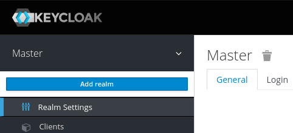

docker run -p 8080:8080 -e KEYCLOAK_USER=admin -e KEYCLOAK_PASSWORD=admin quay.io/keycloak/keycloak:11.0.1Keycloak no Docker
Comece a usar o Keycloak no Docker
Antes que você comece
Certifique-se de ter o Docker instalado.
Iniciar Keycloak
Em um terminal, inicie o Keycloak com o seguinte comando:
Isso iniciará o Keycloak exposto na porta local 8080. Também criará um usuário administrador inicial com nome de usuário admin
e senha admin.
Faça login no console de administração
Vá para o Console de administração do Keycloak e faça o login com o nome de usuário e a senha que você criou anteriormente.
Crie um reino
Um reino no Keycloak é equivalente a um inquilino. Permite a criação de grupos isolados de aplicativos e usuários. Por padrão, há um único domínio no Keycloak chamado master. Ele é dedicado ao gerenciamento do Keycloak e não deve ser usado para seus próprios aplicativos.
Vamos criar nosso primeiro reino.
-
Abra o Admin Console do Keycloak
-
Passe o mouse sobre a lista suspensa no canto superior esquerdo onde está escrito
Mastere clique emAdd realm -
Preencha o formulário com os seguintes valores:
-
Nome:
myrealm
-
-
Clique
Create

Criar um usuário
Inicialmente, não há usuários em um novo domínio, então vamos criar um:
-
Abra o Admin Console do Keycloak
-
Clique
Users(menu à esquerda)-
Clique em
Add user(canto superior direito da tabela)
-
-
Preencha o formulário com os seguintes valores:
-
Nome do usuário:
myuser -
Primeiro nome: Seu primeiro nome
-
Sobrenome: Seu sobrenome
-
-
Clique
Save
O usuário precisará de uma senha inicial definida para poder fazer o login. Para fazer isso:
-
Clique
Credentials(topo da página) -
Preencha o
Set Passwordformulário com uma senha -
Clique
ONao lado deTemporarypara evitar ter que atualizar a senha no primeiro login

Faça login no console da conta
Vamos agora tentar fazer login no console da conta para verificar se o usuário está configurado corretamente.
-
Abra o console da conta Keycloak
-
Faça login com
myusere a senha que você criou anteriormente
Agora você deve estar conectado ao console da conta, onde os usuários podem gerenciar suas contas.

Proteja seu primeiro aplicativo
Vamos tentar proteger nosso primeiro aplicativo. A primeira etapa é registrar este aplicativo com sua instância Keycloak:
-
Abra o Admin Console do Keycloak
-
Clique em 'Clientes'
-
Preencha o formulário com os seguintes valores:
-
ID do Cliente:
myclient -
Protocolo do cliente:
openid-connect -
URL raiz:
https://www.keycloak.org/app/
-
-
Clique
Save

Abra https://www.keycloak.org/app/ e clique Savepara usar a configuração padrão.
Agora você pode clicar Sign inpara se autenticar neste aplicativo usando o servidor Keycloak iniciado anteriormente.
Próximo
Antes de executar o Keycloak na produção, há mais algumas coisas que você deseja fazer, incluindo:
-
Mude para um banco de dados pronto para produção, como PostgreSQL
-
Configure SSL com seus próprios certificados
-
Troque a senha de administrador por uma senha mais segura
Para obter mais informações, verifique a documentação do Keycloak .